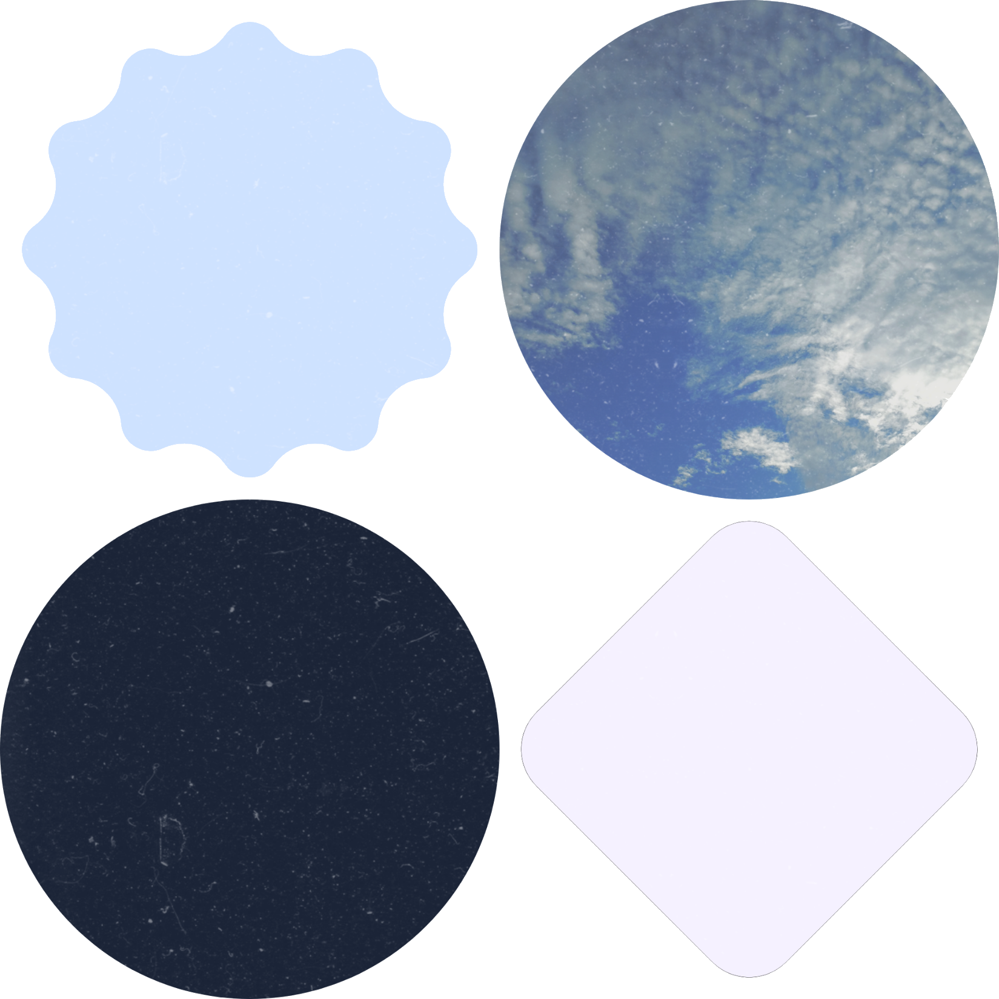
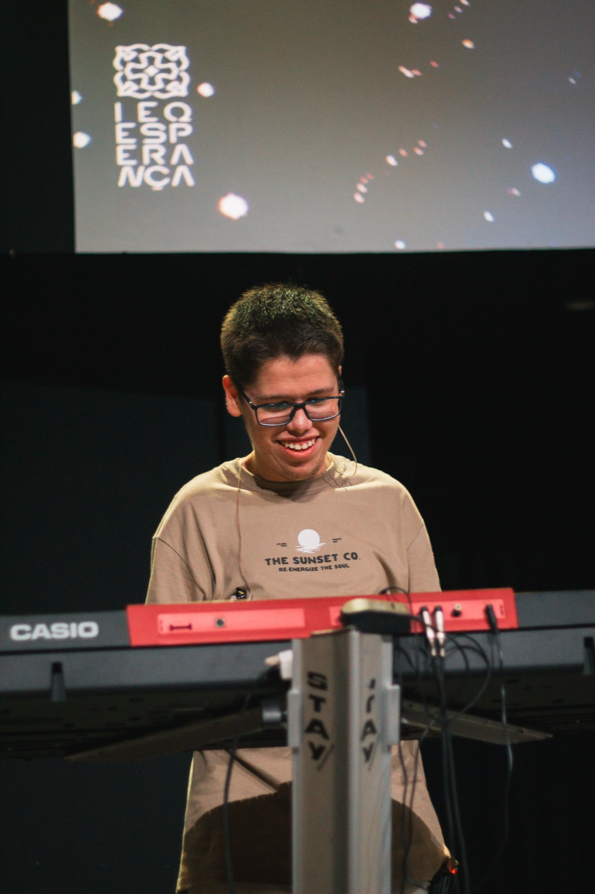
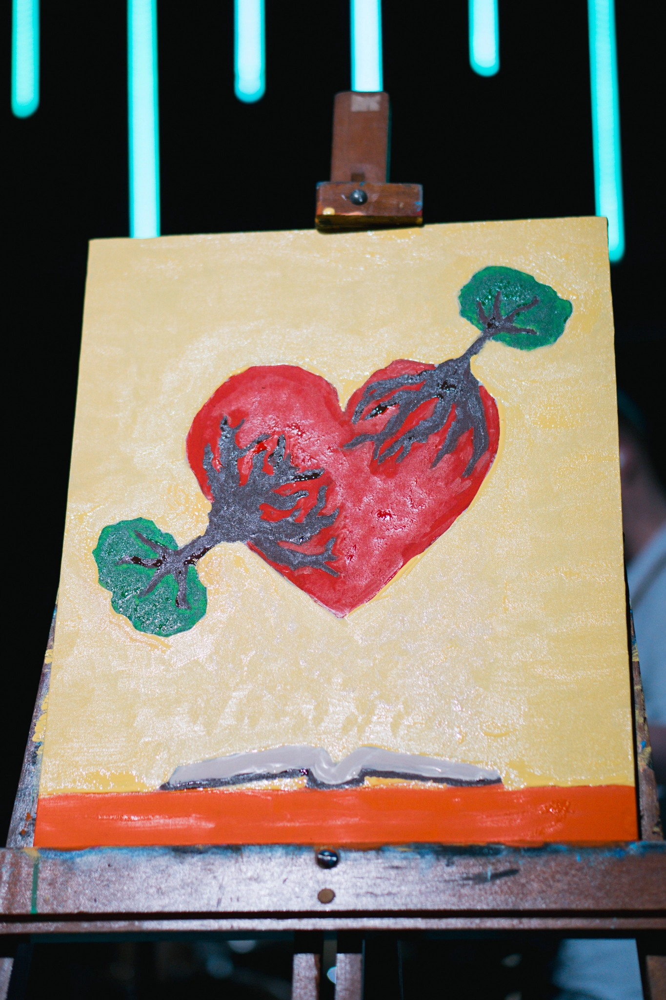

Olá, seja muito bem vindo ao meu portfólio digital, me chamo Gabriel e fico muito honrado em ter você como visitante do meu site! Aqui você verá os meus principais projetos e conhecimentos.

Quem Sou Eu?
Sou um jovem desenvolvedor que gosta de expressar as ideias com criatividade, sempre estou criando algo diferente; seja um simples design no Canva, um site moderno e responsivo, uma pintura cheia de significado e até uma tranquila melodia de piano, estilo Lo-fi.

Minhas Habilidades Gerais & Hobbies
Gosto de aprender coisas novas e como você já deve ter notado, gosto de me aventurar no mundo das artes. Quando não estou criando sistemas ou estilizando interfaces com css, eu gosto de tocar teclado! Amo servir no louvor da minha igreja local, a Família Esperança.

Além de tocar teclado, eu também gosto de pintar! Não sou um artista profissional, mas vejo a pintura e a arte, de maneira geral, como uma forma de expressar uma mensagem que muitas vezes é maior que o próprio artista.

“Tudo o que
fizerem, façam
de todo o
coração,
como para
o
Senhor, e não
para
os
homens”
Colossenses 3:23